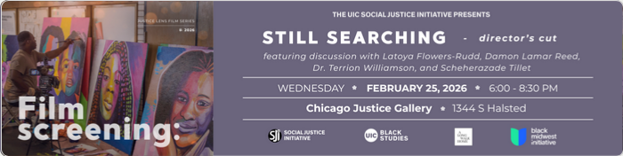

Justice Lens Film Series: Still Searching
Join the UIC Social Justice Initiative, A Long Walk Home, UIC Black Studies, and the Black Midwest Initiative for a special director’s cut screening of the film Still Searching (2018), a powerful exploration of Black women’s lives, loss, and resilience in the face of disappearance in Chicago.
Following the screening, SJI will host a panel discussion that brings together leading voices in Black feminist thought, visual storytelling, and activism: Dr. Terrion L. Williamson (Scholar and Author), Scheherazade Tillet (Activist, Artist, and Director of A Long Walk Home), Latoya Flowers-Rudd (Filmmaker and Cultural Worker), and Damon Lamar Reed (Filmmaker and artist), to reflect on the film’s themes of memory, identity, and representation.
Accessibility notes: Gallery and its bathroom are wheelchair accessible. Masking is suggested.
RSVP here: https://docs.google.com/forms/d/e/1FAIpQLSeWir4YUu0YSwxD88krTOjENUi1tHvgFi-h0UfXmgvsDqT4ew/viewform